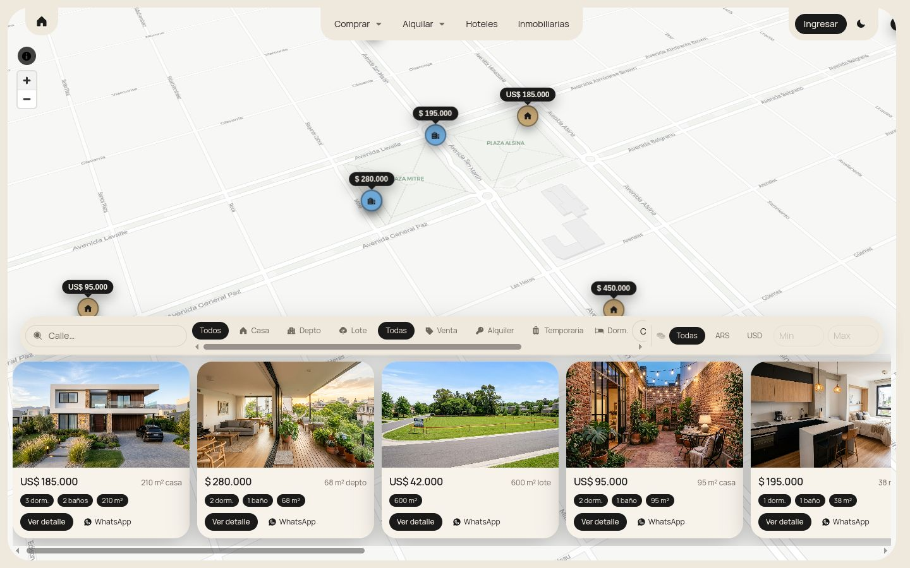
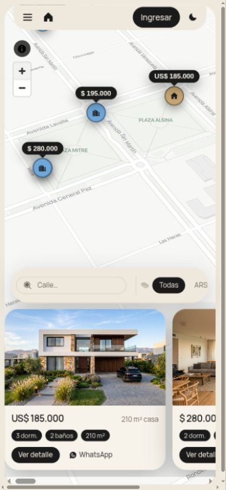
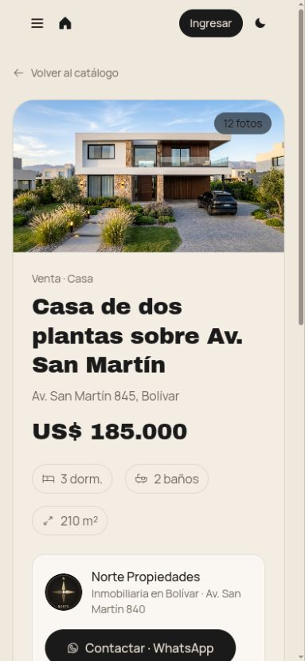
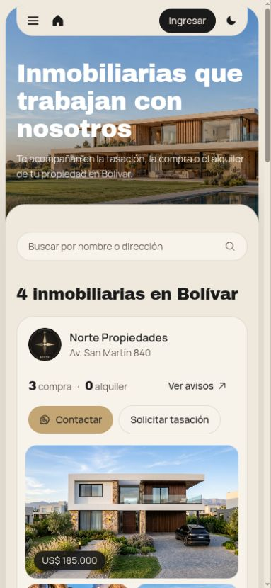
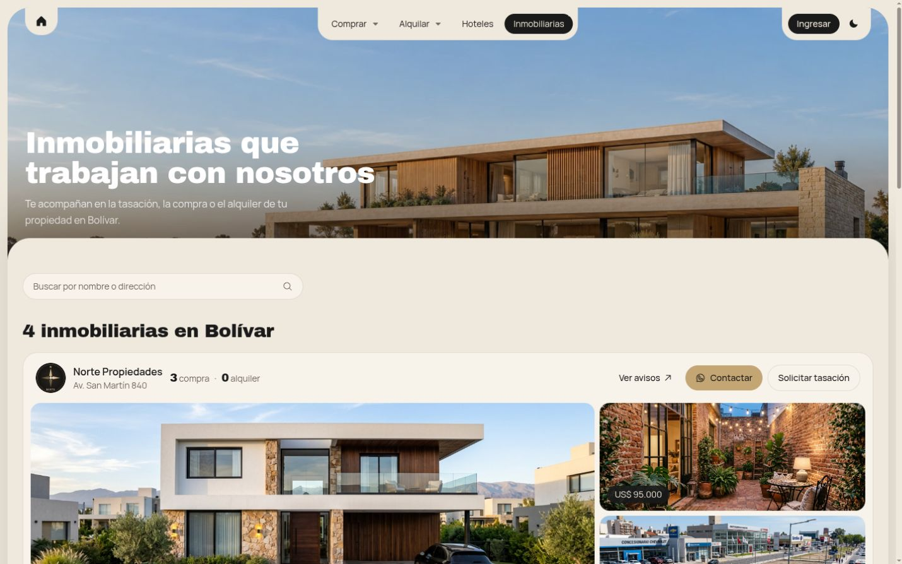
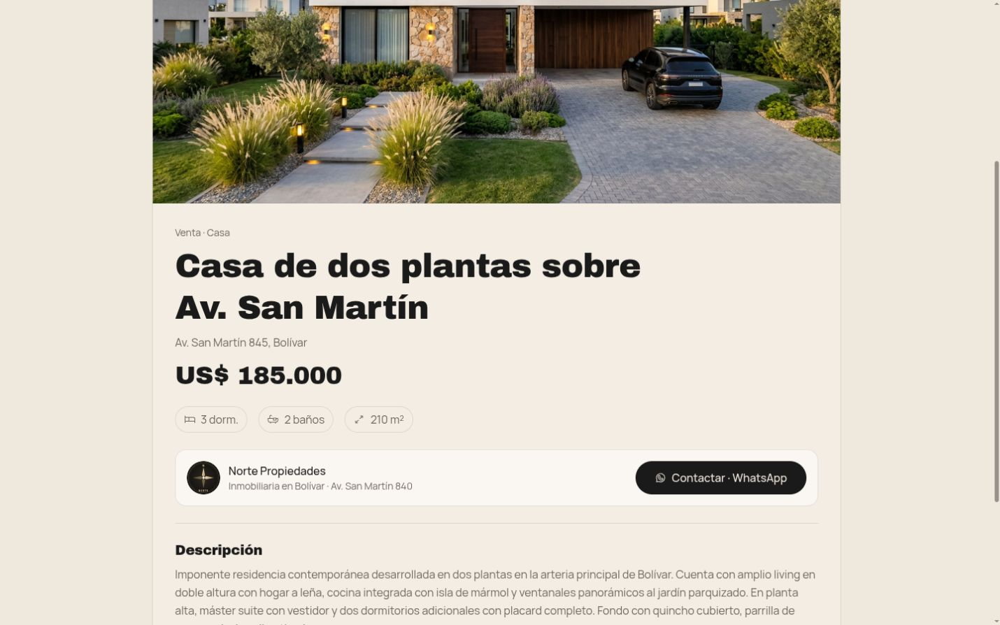

La información está dispersa
Cada inmobiliaria publica en sus propios canales. Para ver todo, hay que saber de antemano cuáles existen.
UNA PLATAFORMA LOCAL
Una plataforma local que reúne la oferta de las inmobiliarias de la ciudad y lleva cada consulta directo al profesional responsable.

Quien quiere comprar o alquilar tiene que armar el mapa por su cuenta, canal por canal e inmobiliaria por inmobiliaria.
Cada inmobiliaria publica en sus propios canales. Para ver todo, hay que saber de antemano cuáles existen.
No se puede buscar por precio, zona o ambientes en un solo lugar, ni comparar opciones.
Una propiedad disponible hace meses puede no llegar a la persona que la busca.
Propiedades ya vendidas o alquiladas siguen circulando como si estuvieran disponibles.
EL PUNTO DE ENCUENTRO
La oferta existe.
Falta conectarla.
Una plataforma web para usar desde el celular o la computadora, sin descargar nada. Funciona sobre cinco ideas:
Casas, departamentos, terrenos, campos, locales y quintas de todas las inmobiliarias, con filtros.
Recorrer la ciudad y ver qué hay disponible en cada zona.
Fotos, videos, ubicación, precio, características y profesional responsable.
Perfil propio con logo, contacto y todas sus propiedades.
WhatsApp, teléfono o formulario con la inmobiliaria. La operación sigue siendo suya.

La pregunta cambia de “¿qué inmobiliaria tendrá algo en esa zona?” a “¿qué hay disponible en esa zona?”.

Precio, ubicación, dormitorios, baños, superficie, cochera y más.
Casas, departamentos, terrenos, campos, locales y quintas. Venta y alquiler.
Nuevas, retasadas, destacadas y oportunidades, para encontrar rápido.
Se toca un punto en el mapa y se abre la propiedad completa.
El alcance propuesto incluye funciones que se incorporarán durante el desarrollo.
Encontrar la propiedad, conocerla y hablar con el profesional responsable.



Entra por un filtro, el mapa o el QR de un cartel y encuentra la propiedad.
Ve fotos, precio, características y quién es el profesional a cargo.
Escribe por WhatsApp o llama directo a la inmobiliaria responsable.
Pantallas actuales de la aplicación · datos de ejemplo.
LA OPERACIÓN
La plataforma acerca la consulta. La inmobiliaria conserva el cliente, negocia y cierra como lo hace hoy.
Un panel propio para publicar sin depender de nadie. Cuando una propiedad se vende o se alquila, se marca y deja de figurar como disponible.
Cargar la propiedad
Actualizar los datos
Ocultar el aviso
Cambiar el estado
ESTADÍSTICAS DE LA INMOBILIARIA
Cuántas personas ven las propiedades.
Qué publicaciones despiertan interés.
Cuántas personas abren el canal de contacto.
Seguimiento de los contactos registrados.
Herramientas previstas en la propuesta. Esta composición describe el alcance; no representa un panel ya implementado.
Ver, mes a mes, qué propiedades interesan y cuántas personas contactan a la inmobiliaria.
A futuro: estadísticas agregadas del mercado local, sin exponer datos privados de ninguna inmobiliaria.Cada cartel lleva un QR con la leyenda “Escaneá y conocé esta propiedad”. Quien pasa por la zona llega directo a la información y al profesional responsable.
ESCANEÁ Y CONOCÉ ESTA PROPIEDAD
01 Fotos y video
02 Precio y ambientes
03 Inmobiliaria responsable
04 Contacto por WhatsApp
Ícono ilustrativo del acceso por QR.
UNA RED LOCAL
Contenido → Plataforma → Propiedad → Inmobiliaria → Consulta
Presencia propia en Instagram, Facebook y Google. Más inmobiliarias, más propiedades y más oportunidades de encuentro.
La plataforma trabaja para llevar el cliente a la inmobiliaria. Cada profesional conserva su marca y el contacto directo.

La inmobiliariaMás exposición y nuevos clientes; tráfico propio, estadísticas, QR para carteles y perfil profesional.
El Centro de MartillerosPuede participar en criterios de identificación profesional, datos mínimos, buenas prácticas y actualización de la oferta.
Distintivo posible solo si el Centro participa formalmente en ese proceso.
Antes de hablar de números, proponemos un camino corto para validar la herramienta con las inmobiliarias de Bolívar.
Presentar el proyecto, escuchar a los profesionales y definir estándares.
Elegir las inmobiliarias que participan de la prueba.
Propiedades cargadas, QR en carteles y consultas reales durante 60 días.
Usuarios, visitas, consultas, clics a inmobiliarias, uso del buscador y feedback.
Después del piloto,
un modelo sustentable.
Proponemos empezar por una reunión con el Centro para presentar el proyecto, escuchar a los profesionales y definir juntos el grupo del piloto.

Empezamos por Bolívar; si funciona, el modelo puede extenderse a localidades cercanas.